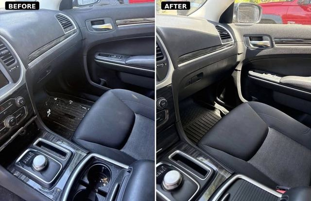
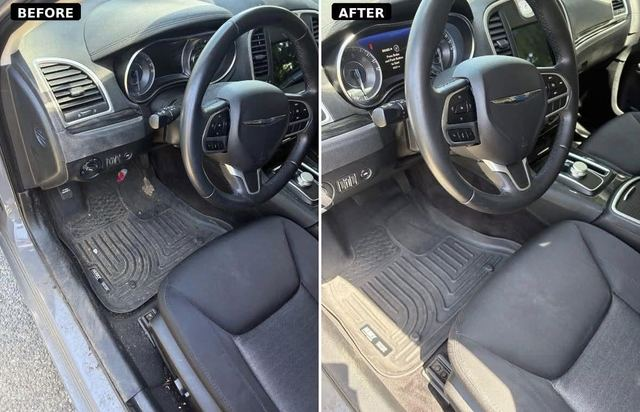
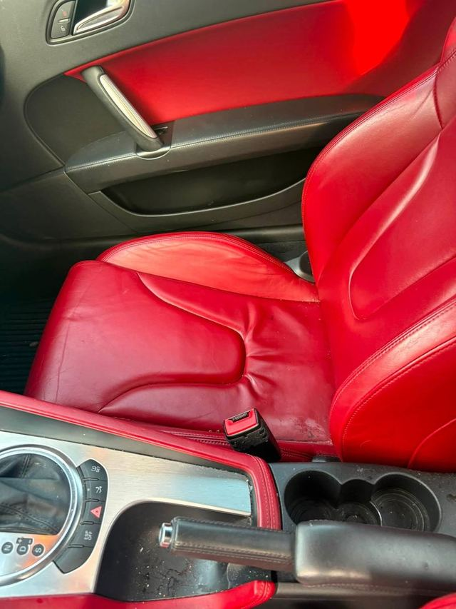

{#- "with context" matters: without it the macro cannot see the photos data,
and every srcset comes out empty. -#}
{% import "photo.njk" as photo with context %}
Gallery | Before & After Interior Detailing | Bright DetailingSkip to content
{% include "header.njk" %}
Gallery
Every car on this page was someone's daily driver.
Straight from my phone. No filters, no stock photos, and no car in here
that somebody else cleaned.
Before and after
Same car, same day.
The before is what I found when I opened the door. Nothing tidied up
for the photo.

Console, footwell & door panel
Chrysler 300

Dash, wheel & driver floor
Chrysler 300
Job walkthrough
Audi TT: red leather, black carpet, no mercy.
Worn leather, gritty mats, dust in every vent. The kind of car that looks fine
from ten feet and rough from the driver's seat.
Before · mats & pedals

Before · seats & consoleAfter · dash & wheelAfter · card on the wheel